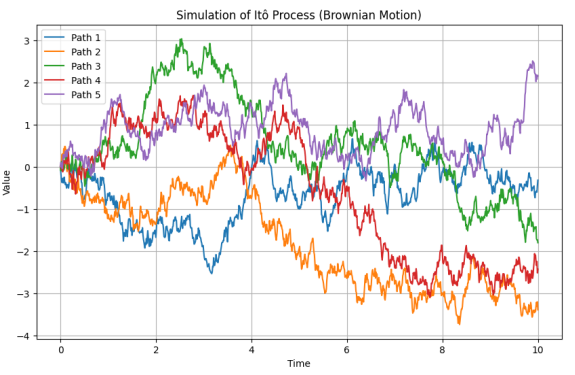

Ito's Calculus, named after the Japanese mathematician Kiyoshi Ito, extends the methods of calculus to stochastic processes, allowing for the integration of random variables with respect to Brownian motion.
The central concept is the Itô stochastic integral, a stochastic generalization of the Riemann–Stieltjes integral in analysis. The integrands and the integrators are now stochastic processes:
\(Y_t = \int_{0}^{t} H_s dX_s\)
Here, \(H_s\) is a locally square-integrable process adapted to the filtration generated by X
Concretely, the integral from 0 to any particular t is a random variable, defined as a limit of a certain sequence of random variables. The paths of Brownian motion fail to satisfy the requirements to be able to apply the standard techniques of calculus. So with the integrand a stochastic process, the Itô stochastic integral amounts to an integral with respect to a function which is not differentiable at any point and has infinite variation over every time interval. The main insight is that the integral can be defined as long as the integrand H is adapted. So the result of the integrand depends entirely on the informations available at that time.
Simulation
Below the python code simulates different paths for ito's processes.
import numpy as np
import matplotlib.pyplot as plt
# Parameters
num_paths = 5 # Number of simulated paths
num_steps = 1000 # Number of time steps
dt = 0.01 # Time step size
initial_value = 0 # Initial value for the process
# Function to simulate an Itô process (Brownian motion)
def ito_process(num_paths, num_steps, dt):
paths = np.zeros((num_paths, num_steps + 1))
for i in range(num_paths):
for j in range(num_steps):
paths[i, j + 1] = paths[i, j] + np.sqrt(dt) * np.random.normal()
return paths
# Simulate Itô process
paths = ito_process(num_paths, num_steps, dt)
# Time axis
time = np.arange(0, num_steps + 1) * dt
# Plotting
plt.figure(figsize=(10, 6))
for i in range(num_paths):
plt.plot(time, paths[i], label=f"Path {i + 1}")
plt.title("Simulation of Itô Process (Brownian Motion)")
plt.xlabel("Time")
plt.ylabel("Value")
plt.legend()
plt.grid(True)
plt.show()
